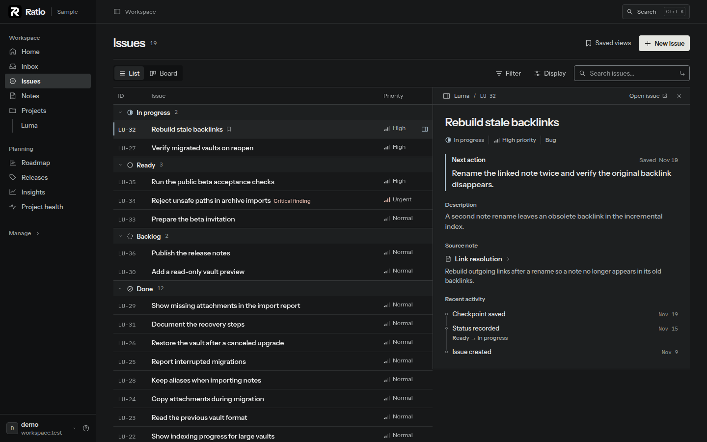
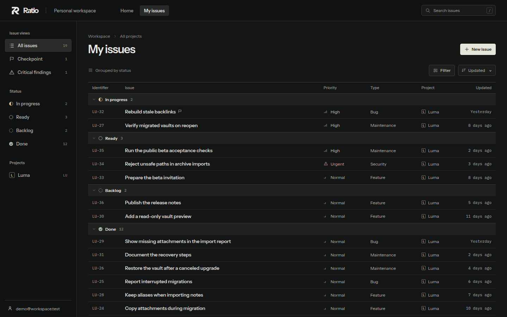
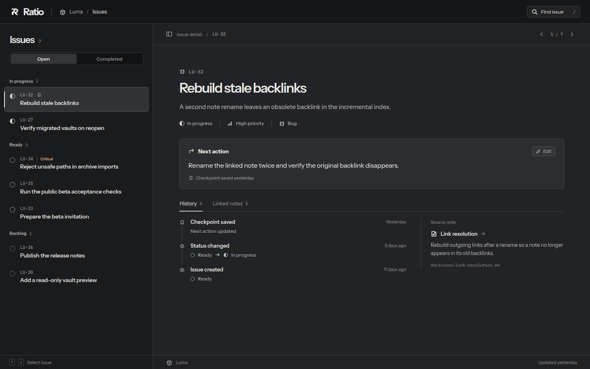
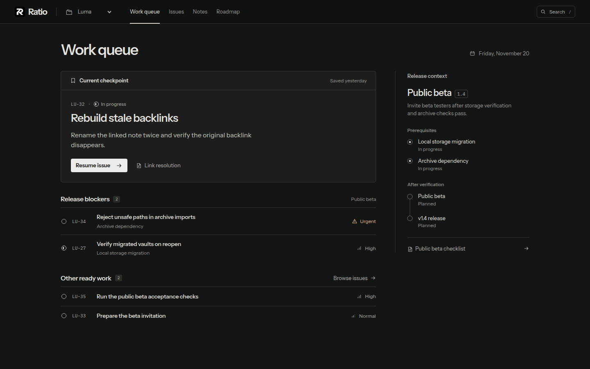

Workbench review
Compare the original workspace with three design passes and the release candidate. Switch stages to keep the same screen and viewport in place.


Follow LU-32, “Rebuild stale backlinks,” from its row in the register to its saved next action and source note. On a phone, the register takes the full width.
Capture details
- Fixture
- Source screenshot
- Original PNG SHA-256
- Displayed image
Three directions for Luma
Each study uses the same issue and project records at 1440 × 900. The final workspace draws its rows from the ledger, its inspector from the workbench, and its Home checkpoint from the queue.


Precision ledger
Compare issue identifiers, titles, status, and priority across a shared register.


Issue workbench
Keep the selected issue, saved action, and source note beside the navigator.


Work queue
Resume a checkpoint, then see which milestones depend on the remaining work.
Image index
All product captures
| Screen | 1440 × 900 | 1280 × 800 | 390 × 844 |
|---|---|---|---|
| Issue workbench | Original · C1 · C2 · C3 · Release | Original · C1 · C2 · C3 · Release | Original · C1 · C2 · C3 · Release |
| Selected issue preview | — | C1 · C2 · C3 · Release | C1 · C2 · C3 · Release |
| Issue detail | Original · C1 · C2 · C3 · Release | Original · C1 · C2 · C3 · Release | Original · C1 · C2 · C3 · Release |
| Home | Original · C1 · C2 · C3 · Release | Original · C1 · C2 · C3 · Release | Original · C1 · C2 · C3 · Release |
| Issue board | — | Original · C1 · C2 · C3 · Release | Original · C1 · C2 · C3 · Release |
| Project detail | Original · C1 · C2 · C3 · Release | — | Original · C1 · C2 · C3 · Release |
| Note detail | Original · C1 · C2 · C3 · Release | — | Original · C1 · C2 · C3 · Release |
| Roadmap | Original · C1 · C2 · C3 · Release | — | Original · C1 · C2 · C3 · Release |
| Release review | — | Original · C1 · C2 · C3 · Release | — |
| Workspace settings | — | Original · C1 · C2 · C3 · Release | Original · C1 · C2 · C3 · Release |
| Open issue filters | — | Original · C1 · C2 · C3 · Release | Original · C1 · C2 · C3 · Release |
| Command search | C1 · C2 · C3 · Release | C1 · C2 · C3 · Release | C1 · C2 · C3 · Release |
| New issue | Original · C1 · C2 · C3 · Release | — | Original · C1 · C2 · C3 · Release |
| Empty issue list | — | Original · C1 · C2 · C3 · Release | Original · C1 · C2 · C3 · Release |
| Dense issue list | Original · C1 · C2 · C3 · Release | — | Original · C1 · C2 · C3 · Release |
| Issue title validation | — | — | Original · C1 · C2 · C3 · Release |
| Note draft recovery | — | — | Original · C1 · C2 · C3 · Release |
| Mono issue workbench | — | Original · C1 · C2 · C3 · Release | — |


Touch-landscape captures at 844 × 390. Filters C3 · Release. Composer C3 · Release.


See also the native desktop connection window at 1280 × 800. Original PNG · Updated PNG